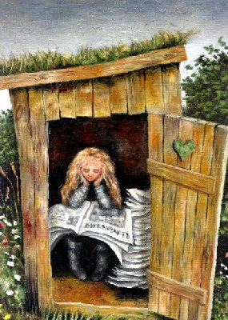
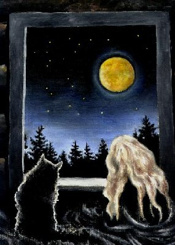

Utdrag fra begynnelsen …
Trollet og jenta med det skarpe sverdet
Tekst av Ingar Knudtsen
Malerier av Evy Holmen
I en stor skog bodde det en ganske liten pike, og hun bodde helt for seg sjøl, for hun var foreldreløs. Men hun var ikke alene for hun hadde en katt som het Pjau og en hest som het Lilly og hun kjente dyra og fuglene i skogen og en gang i uken kom postmannen med post til henne og når hun trengte det red hun ned til butikken i bygda og kjøpte slikt som hun hadde bruk for.

Over peisen i stua hennes hang det et ganske lite sverd, og det hadde hun arvet etter moren sin som hadde vært soldat og reist til mange fjerne steder til hun ble så lei av å slåss at hun aldri ville gjøre det mer. Til den lille jenta si gav hun sverdet sitt og sa til henne at hun måtte ta godt vare på det og øve seg med det hver dag.
Jenta gjorde det, enda hun kanskje syntes det var bare tull og ganske kjedelig, sånn til å begynne med. Men hun ble etterhvert veldig flink og aldri redd verken for mørket eller skogen. For det er nå en gang slik at det kjennes trygt å kunne forsvare seg og katten sin og hesten sin om så bare med et ganske lite sverd.
Den eneste bekymringen hun hadde var at pengene som hun hadde arvet etter moren sin begynte å ta slutt, og hun var slett ikke sikker på hvordan hun skulle tjene penger, hun som var så lita kunne jo ikke ta seg arbeid.
Den vesle jenta hadde et utedo, naturligvis hadde hun det, for hun hadde jo ikke innlagt vann og elektrisk strøm og slike ting som de fleste synes de ikke kan greie seg uten. Og hver gang postmannen kom med ei ukes beholdning av aviser til henne la hun dem på do slik at hun både kunne ha dem til å lese i og til å tørke seg med når hun var ferdig.
En høstdag da hun satt på do og akkurat hadde fått en ny bunke aviser av postmannen sto det en artikkel der om et troll på hele første side i Bygdeposten.
INGEN KAN HJELPE TROLLET, sto det med store bokstaver. Det var et bilde av trollet også. Det var virkelig et digert troll, mye større enn noen av småtrolla hun noen ganger møtte i skogen.
Men det store trollet så ganske sørgmodig ut, og det var lett å se at det var nesen det var noe galt med, for den hadde en vorte så stor at det nesten så ut som det hadde to neser. Ei vorte som etter hva det sto i avisa bare vokste og vokste og vokste.
Både Per og Pål og Espen og doktorer og tryllekunstnere og hekser hadde prøvd å hjelpe trollet til å bli kvitt vorta på nesen, men det var visstnok ganske umulig, om trollet ville gi aldri så mye gullpenger til den som kunne hjelpe ham.

– Jeg kan ha bruk for de pengene, tenkte jenta, der hun satt. Jeg kan virkelig ha bruk for dem. Og hun tenkte på at hva hesten hennes trengte, og katten, og huset - og sjøl trengte hun vel noe nytt også.
Dessuten syntes hun nå forferdelig synd på trollet også. Men dessverre. Lengst nede i artikkelen sto det at trollet var veldig redd for kniver, og at han heller ville kjøre med nesen i ei trillebør enn å la noen skjære vekk vorta.
– Jaja, det var det, sukket den vesle jenta. - Da kan jo ikke jeg gjøre noe.
For det var jo sverdet hun var flink med, og hun hadde tenkt at hvis hun kunne skjære vekk den stygge vorta med det, så ville det være fort gjort. Et par tre raske hogg…
– Neinei, sa hun til katten. - Neinei, Pjau.
Hun satte seg i sofaen sin og katten hoppet opp og la seg ved siden av henne og hun klappet og klappet den mjuke grå kattepelsen, mens tankene kjørte karusell inne i hodet på henne. Hun spiste og la seg i senga si på loftet. Månen skinte gul og stor mellom tretoppene inn gjennom vinduet hennes og det runde måneansiktet smilte lurt mot henne og blunket med det ene øyet.
– Du kunne jo. Likevel.
Hun satt seg bråfort opp i senga.
– Hva? Sa du noe, sa hun til Månen.
– Majauu, sa Pjau forundret nede fra fotenden på senga. Der hadde den plassen sin.
– Ikke du. Det var Månen.
Men månen sa ikke noe mer og hun lo litt av sin egen dumhet.
– Måner snakker ikke, gjør de vel? sa hun til katten. - De henger bare der ute i verdensrommet og gjør ingen verdens ting.
Men likevel, tenkte hun. Jeg kunne gjøre det. Helt sant. Og trollet ville ikke rekke å bli redd. Ikke hvis….
Hun sovnet med den tanken.